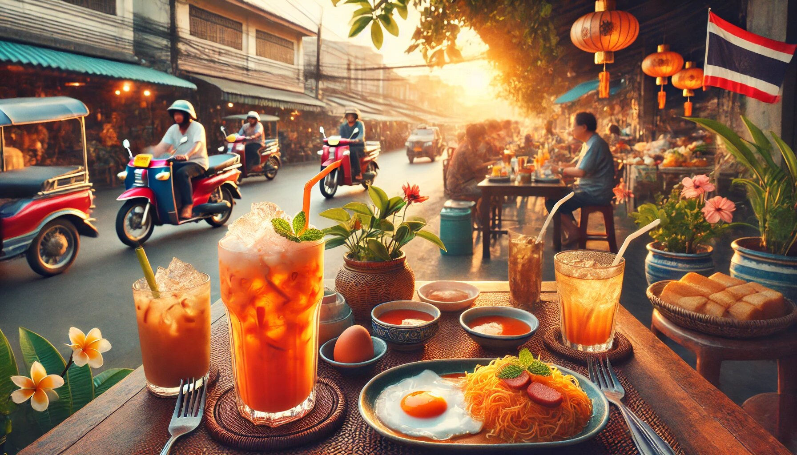

When you think of Thailand, what comes to mind? Beautiful beaches, bustling markets, spicy food, and of course, Thai tea this creamy, orange-hued drink is a staple in Thai culture, loved by locals and tourists alike. But do Thai people usually have Thai tea in the morning? Let’s dive into this delicious topic and explore the positive reasons why Thai tea might just be the perfect way to start your day—Thai style!

Before we get into the morning habits of Thai people, let’s talk about what Thai tea actually is. Thai tea, or "cha yen" (ชาเย็น) in Thai, is a sweet and creamy beverage made from strongly brewed Ceylon tea, mixed with condensed milk, evaporated milk, and sugar. It’s often served over ice, making it a refreshing treat, especially in Thailand’s tropical climate. The vibrant orange color comes from food coloring or natural ingredients like turmeric, giving it a unique and Instagram-worthy appearance.
Now, let’s answer the big question: Do Thai people usually have Thai tea in the morning? The short answer is—yes, they do! While Thai tea is enjoyed at any time of the day, many locals love starting their mornings with a glass of this sweet, creamy delight. Here’s why:
Who doesn’t love a little sweetness in the morning? Thai tea is the perfect way to kickstart your day with a smile. The combination of strong tea and creamy milk provides a comforting and indulgent flavor that feels like a hug in a glass. For many Thai people, it’s a delightful alternative to coffee, offering a gentler caffeine boost without the bitterness.
Thai tea contains caffeine from the Ceylon tea, which helps wake you up and get you ready for the day ahead. Unlike some strong coffees that might leave you feeling jittery, Thai tea provides a more balanced energy boost. It’s like having a friendly nudge to get you out of bed and into your daily routine.
Thai cuisine is known for its bold flavors, and breakfast is no exception. Popular Thai breakfast dishes like khao tom (rice soup), jok (rice porridge), or kai kra ta (fried egg with sausage) pair wonderfully with Thai tea. The sweetness of the tea balances out the savory and spicy flavors of the food, creating a harmonious start to the day.
In Thailand, food and drink are deeply rooted in culture and tradition. Enjoying Thai tea in the morning is more than just a habit—it’s a way to connect with Thai heritage. Many locals grew up watching their parents or grandparents sip on Thai tea while preparing for the day, making it a nostalgic and heartwarming ritual.
Thailand’s weather can be hot and humid, even in the early hours of the morning. Thai tea, often served over ice, is a refreshing way to cool down and hydrate. It’s like having a mini air conditioner for your insides—perfect for beating the heat!
One of the best things about Thai tea is how accessible it is. Whether you’re in Bangkok, Chiang Mai, or a small village, you’re never far from a street vendor or café serving this beloved drink. It’s also incredibly affordable, making it a practical choice for busy mornings when you’re on the go.
In Thailand, meals and drinks are often shared with family and friends. Having Thai tea in the morning can be a social activity, bringing people together before they head off to work or school. It’s a great way to bond and share a moment of joy before the day gets busy.
Now that we’ve established that Thai tea is indeed a popular morning choice, let’s explore why it’s such a winner:
Thai tea isn’t just a one-trick pony. While the classic version is sweet and creamy, you can customize it to suit your taste. Want it less sweet? Ask for less sugar. Prefer it stronger? Request more tea. Some people even add boba (tapioca pearls) for a fun twist. This versatility makes it appealing to a wide range of people.
Let’s be honest—we all love a pretty drink, and Thai tea is definitely photogenic. The vibrant orange color, the creamy swirls of milk, and the ice cubes glistening in the sunlight make it a feast for the eyes as well as the taste buds. Posting a picture of your morning Thai tea is a great way to make your friends jealous (in a good way, of course).
There’s something incredibly comforting about Thai tea. Maybe it’s the creamy texture, the sweet flavor, or the warmth of the tea (if you prefer it hot). Whatever it is, it has a way of making you feel cozy and content, even on the most hectic mornings.
For those who have visited Thailand or have Thai roots, drinking Thai tea in the morning is like taking a little trip back to the Land of Smiles. It’s a way to carry a piece of Thailand with you, no matter where you are in the world.
If you’re inspired to try Thai tea in the morning but don’t live in Thailand, don’t worry—you can make it at home! Here’s a simple recipe to get you started:
To wrap things up, here are some fun facts about Thai tea that you might not know:
Taro milk tea is more than just a trendy drink—it’s a delicious, versatile, and comforting treat that’s perfect for any occasion. Whether you’re a bubble tea newbie or a seasoned pro, there’s no denying the appeal of this sweet, creamy, and Instagram-worthy drink. So the next time you’re at a bubble tea shop, skip the usual and give taro milk tea a try. Your taste buds (and your Instagram feed) will thank you.
So, do Thai people usually have Thai tea in the morning? Absolutely! Whether it’s for the sweet flavor, the energy boost, or the cultural connection, Thai tea is a beloved morning ritual for many. It’s refreshing, comforting, and a little bit indulgent—everything you need to start your day on a positive note.
If you haven’t tried Thai tea in the morning yet, what are you waiting for? Brew yourself a glass, pair it with your favorite breakfast, and experience the joy of this iconic Thai drink. Who knows? It might just become your new morning favorite. And if anyone asks why you’re drinking Thai tea at 7 a.m., just tell them you’re embracing the Thai way of life—one sweet sip at a time. Cheers!